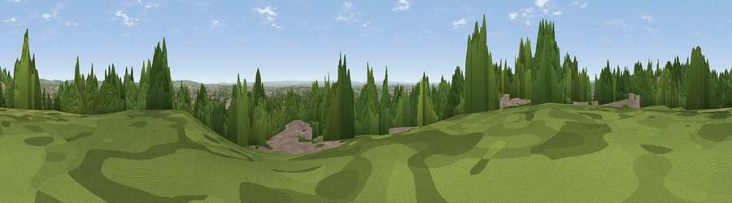

Viewpoint near Harrow
#29739 in England · top 11% of its area beats it · near HarrowThe view, rendered

A 360° render of this exact spot computed from the terrain model, tree cover and land cover — summer colours, afternoon light, calibrated against photographs of famous viewpoints. Real trees, hedges and buildings will differ in detail.
The panorama
Grey silhouette: terrain skyline in each direction (720 bearings, Earth curvature and refraction included). Dashed green: skyline with trees (+15 m) and buildings (+8 m) as obstacles. Blue strip: how far the ground is visible on each bearing.
Where the view opens
Wedge length = distance to the farthest visible ground on that bearing (vegetation-aware). Rings at 10, 25 and 50 km.
What fills the view
42% built-up · 39% woodland · 18% grassland ·
Angular shares of the visible panorama (visual magnitude), not map area. Landscape diversity 0.47 (0–1 Shannon).
Key numbers
More beautiful places nearby
The staircase of upgrades: each row has a higher view potential than everything closer. Driving times are estimates from straight-line distance, calibrated against real road routing — check an actual route before setting out.
| Place | Direction | Drive | Score |
|---|---|---|---|
| Harrow on the Hill | N · 1 km | ~3 min | 60.7 |
| Viewpoint near Tring Station | NW · 34 km | ~52 min | 68.5 |
| Box Hill | S · 35 km | ~54 min | 70.4 |
| Viewpoint near Halton | NW · 35 km | ~54 min | 74.3 |
| Coombe Hill Monument | NW · 36 km | ~55 min | 75.5 |
| Barlavington Down | SSW · 74 km | ~97 min | 77.3 |
| Wolstonbury Hill | S · 74 km | ~98 min | 79.6 |
| Viewpoint near Storrington | S · 74 km | ~98 min | 83.9 |
51.56717, -0.33751 · source: screening · position refined by local search. Computed location — check access rights before visiting.